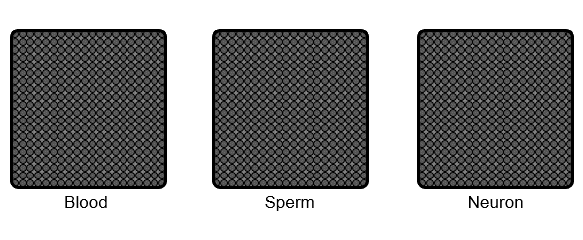
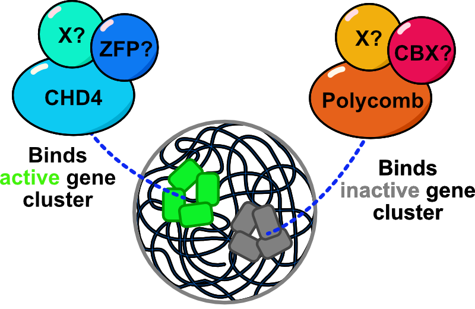
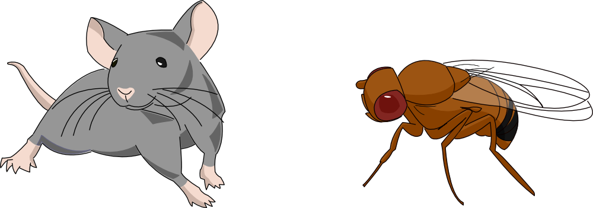
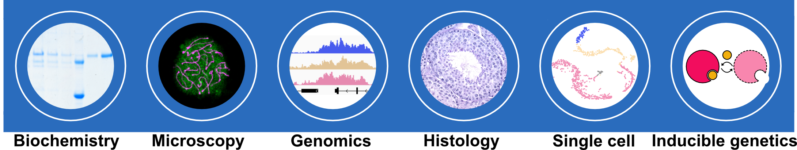

Gene Silencing

There are numerous genes in the genome, but a cell expresses only a subset of genes to establish its own identity. Thus, cell type-specific gene expression is at the core of cell fate determination. Gene silencing mechanisms play an essential role in transcriptional fidelity by blocking the misexpression of inappropriate genes. Our group is interested in the role of chromatin modifying proteins in preventing spurious transcription. In particular,
- How is chromatin modified and organized to maintain the 'silent' state?
- How do the gene silencing mechanisms ensure cell type-specific gene expression and safeguard cell fate?
- How do these mechanisms orchestrate the burst of testis-specific gene expression, support male fertility, and contribute to ensuing embryonic development?
Spermatogenesis
The testis has the most diverse transcriptome. Some genes have second testis-specific promoters that are regulated by testis-specific paralogous regulatory proteins. These new regulatory inventions drive dramatic gene expression changes. We will use this unique feature to observe the divergent behavior of chromatin regulators and advance our understanding of their mechanism. The male germ line will be the uniting principal model for our lab, and we will employ both fly and mouse models to utilize the unique advantages of each system.
Polycomb and CHD4/Zinc finger protein

We will investigate the role of CHD4-Zinc finger protein (ZFP) and Polycomb complexes in male germ cells. Both complexes are required to prevent gene misexpression and can modulate chromatin architecture. However, they bind different sets of either active (CHD4-ZFP) and inactive (Polycomb) genes, suggesting that cells may have distinct mechanisms of compartmentalizing inactive and active chromatin. Furthermore, these proteins form distinct complexes in the testis by switching homologous components or by incorporating new subunits. We are interested in how changes in the subunits can alter the function of these complexes to support the unique chromatin environment of male germ cells. Ultimately, findings from these two chromatin complexes will lead to general principles on the segregation of active and inactive chromatin domains and their role in cell fate regulation.
Model system: flies and mice

Why use two different systems? Several questions can be approached by studying more than one species. How did gene regulation evolve differently between flies and mice? What additional layers of regulation are needed in a mammalian genome that is 20 times the size of the fly genome? On the other hand, many genes involved in spermatogenesis are conserved in flies and mice. Then, what are the core processes required for the spermatogenesis? Flies will be a foundation for uncovering core mechanisms, and mice will provide the opportunity to address the complexity of distinct variant complexes that arose in mammals. Being in the Vet school will provide an opportunity to examine some of the many species between arthropods and mammals in the evolutionary tree.
Approach

We employ diverse methods to address the research questions listed above. Our approach includes genetic perturbations, microscopy, and high-throughput sequencing. We identify new genes through genetic screens, exploring the consequences of perturbing the gene products using rapid induction and depletion methods. Cellular phenotypes are analyzed using classical histological techniques, Fluorescence In Situ Hybridization (FISH), and single-cell sequencing-based profiling. Gene expression and chromatin status are probed through sequencing-based chromatin profiling methods, such as Cut&Run and Hi-C. Additionally, we utilize FISH-based methods to analyze gene expression and chromatin structure in situ. We are also committed to developing innovative genetic screening methods and adapting existing chromatin profiling technologies for rare cell types within tissues. We strive to perform mechanistic studies in vivo through these complementing methodologies.